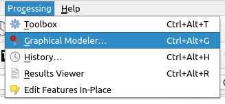
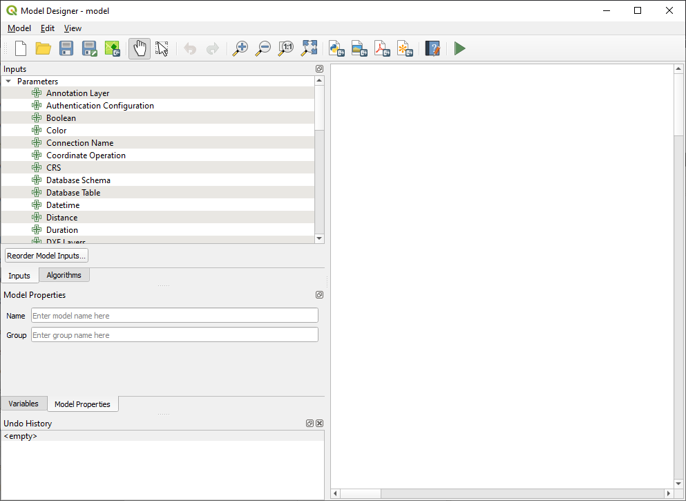
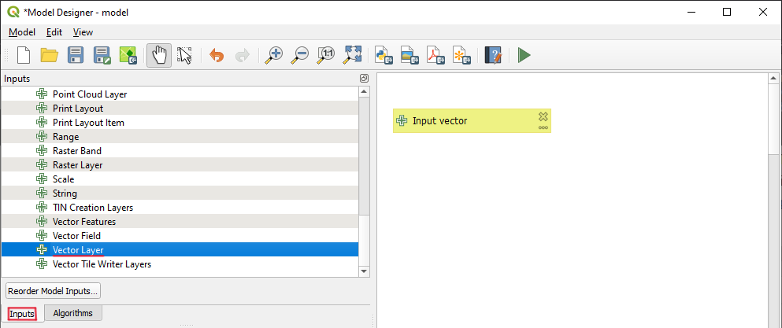
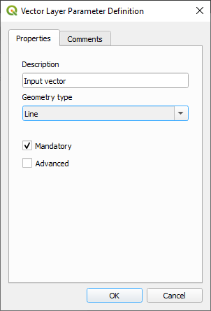
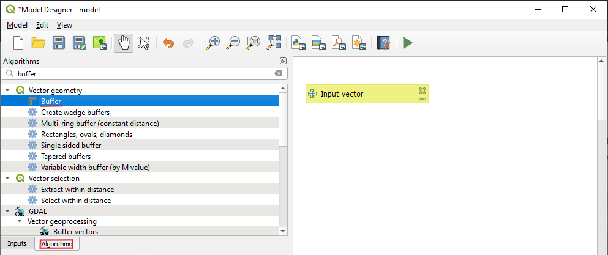
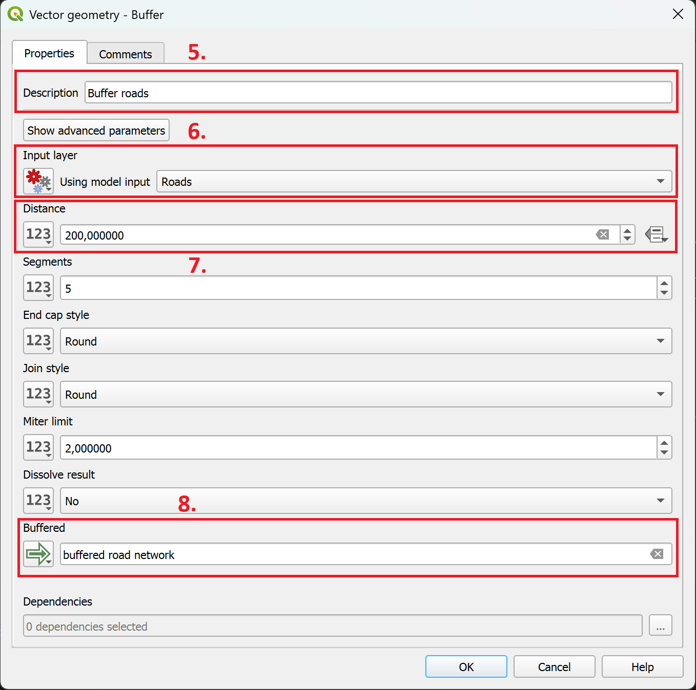

The model designer in QGIS#
Introduction into the QGIS Model Designer#
The Graphical Modeler also known as the Model Builder allows users to create complex models using a visual interface. Most analysis tasks in a GIS are not isolated, but part of a chain of operations resulting in a series of inputs and outputs (e.g. clipping the area of interest, performing a spatial join and applying some table functions). Using the Graphical Modeler, this chain of operations can be combined into a single process, which can then be easily reproduced with a different set of inputs. Regardless of how many steps and different algorithms are involved in the analysis, a model is executed as a single algorithm, saving time and effort.
Graphical User Interface#
The Graphical Modeler can be accessed from the Processing menu Processing -> Graphical Modeler as shown in Fig. 6.1.
{kind=link}

How to open the Graphical Modeler in QGIS#
This will open the following window, which contains everything we need to build a model.
{kind=link}

Screenshot of the Graphical Modeler window for QGIS version 3.28.4#
In the Graphical Modeler window we can see several icons and menus. Firstly, we will focus on the left window for the Inputs and Algorithms section. Inputs are all the input variables or layers for a model, such as a Vector Layer, Raster Layer, String, Boolean, Expression and many others. The Algorithms are all the tools that are used to process the input variables. In the processing chain, one algorithm/tool will return an output that will be used by another/the following tool until the final output is created.
Creating a model#
Creating a model involves two basic steps:
Defining the necessary inputs. These inputs are added to the parameter window so the user can set their values when running the model.
Defining the processing steps. The processing steps are defined by adding algorithms and selecting how they use the defined inputs or the outputs generated by other algorithms in the model.
Building a model to buffer road infrastructure#
We will build our first simple model by buffering road segments. This process is based on a vector layer containing the road data and the buffer algorithm.
Selection of inputs#
To add new inputs:
Select the
Inputstab from the left window.Next, select the
Vector Layerby either double-clicking or dragging and dropping it onto the model canvas (Fig. 6.3). This will open the input Parameter Definition window (Fig. 6.4).In this window we can customize some vector input parameters such as
Description,Geometry type(Point, Line, Polygon) and we can also define our input as mandatory for your model by ticking theMandatorybox.
{kind=link}

Vector Layer as input#
{kind=link}

Vector Layer Parameter Definition#
Selecting the Algorithms#
The model builder is using the same algorithms that are available in the processing toolbox in the main QGIS window. To add algorithms:
Select the
Algorithmstab on the left.Using the searchbar, look the the tool
Bufferalgorithm as shown in Fig. 6.5.Add it to the model canvas by dragging it onto the canvas or double-clicking on it.
{kind=link}

Selection of Buffer algorithm#
The algorithm parameters window will open. Here we have to specify the description (title), the input, the buffer size, and the output.
Note
The algorithm window looks a bit different than when using the algorithm outside the model builder. The main difference is that you have to specify the algorithm input as either being one of the model inputs you have defined or an output of another algorithm. By selecting the output of another algorithm, you can effectively chain multiple analysis steps into each other to create a complex workflow.
In the
Descriptionfield, enter a name or a description of the processing step (e.g. Buffer road network)As the
Input layer, select an input layer for the model (e.g. road infrastructure).Next, we want to specify the buffer size. The units of measurements will be the same as for the project CRS. Enter 200,000. This will instruct the algorithm to create a buffer of 200 meters (or units of measurement).
Add a name in the output field to specify the output of the algorithm as an output of the model.
{kind=link}

Adding the buffer algorithm to the model#
Chaining algorithms#
The power of the model designer lies in it’s ability to chain several processing steps together, creating a complex automated workflow.
To chain processing steps together:
Add another algorithm to the model canvas (e.g., Clip)
As
Input layer, instead ofModel input, select .
. Algorithm output.Next, select the specific input from a previous processing step.
Tips and Tricks when working in the model designer#
Working with multiple processing steps
When working with multiple processing steps, it can quickly become confusing choosing the inputs when connecting processing steps. Make sure to give each step a clear name so you can identify it easily when choosing inputs for other processing steps.
Adding comments to your model
The graphical model designer can be difficult to understand when looking at a medium to large model, as you can’t see the the parameters of the algorithms and you can’t see the attributes of the layers.
To make it easier to understand, you can add comment boxes to your processing steps or inputs.
Double-Click on an algorithm to open the algorithm’s parameter.
At the top of the algorithm window, navigate to the
Comments-tab. Here you can enter a comment describing what the processing step is doing and what should be considered. You can also specify a colour for the comment box.Click Ok. A new box connected to the algorithm will appear in your model canvas.
Joining Attributes
When joining layers in the model designer, by default, it copies all of the attributes to the new layer. This can quickly result in large, confusing attribute tables. In order to copy several, but not all, attributes, you have to enter the column names with the following syntax:
Value_1;Value_2;Value_3
Adding group boxes
When organising your model, you can add group boxes to group algorithms in the model canvas to visually order the different steps.
In the top bar, navigate to
Edit->Add Group Box. A grey box will appear in the background of the model canvasDouble-Click on the group box to enter a name and customise the colour.
Testing the model
When building a model, it is useful to add temporary outputs for the individual steps to verify that the processing steps or calculations are correct in the intermediary steps.